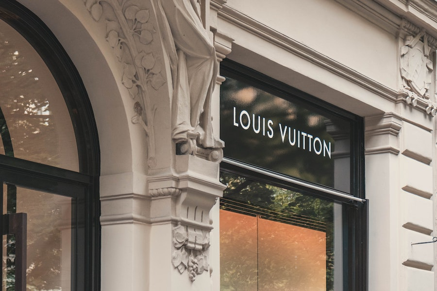

Trends
What is the latest trend now? Before we talk about the looks, we need to talk about trending fashion brand now days. Almost every trend starts from the high-end brands. They first show their look books to public and other designer brands look at the high-end brand’s latest clothes and try to catch what is going to lead that season. After most of the designer brands finish their season, that is where the domestic brands start their season. They check the look books of various high-end and designer brands to see what outfits will lead this season. And this process is repeated all the way down to no brand products. So, it is important to know the process how the trends spread, which is always to check the high-end brands to see what is new. Now we just learned the process how trends spread. Let’s talk about the leading brands right now. Form my perspective, ‘Louis Vuitton’, which Virgil Abloh was the director few months ago, and ‘Celine’ with Hedi Slimane being a creative director are the trendiest brands now. Trending looks and moods are getting more casual and sportier every year. Most of the formal looks and brands are influenced by the casual trend. Wearing suits with sneakers are not an unusual thing anymore. Giorgio Armani, who is a founder of brand ‘Armani’ recently said ‘The time of wearing tie is now past’. We learned that casual and sporty looks are trending now days what about the color? The color of the year 2022, selected by ‘Pantone’, is ‘very peri’. ‘Very peri’ is a color in purple color set.